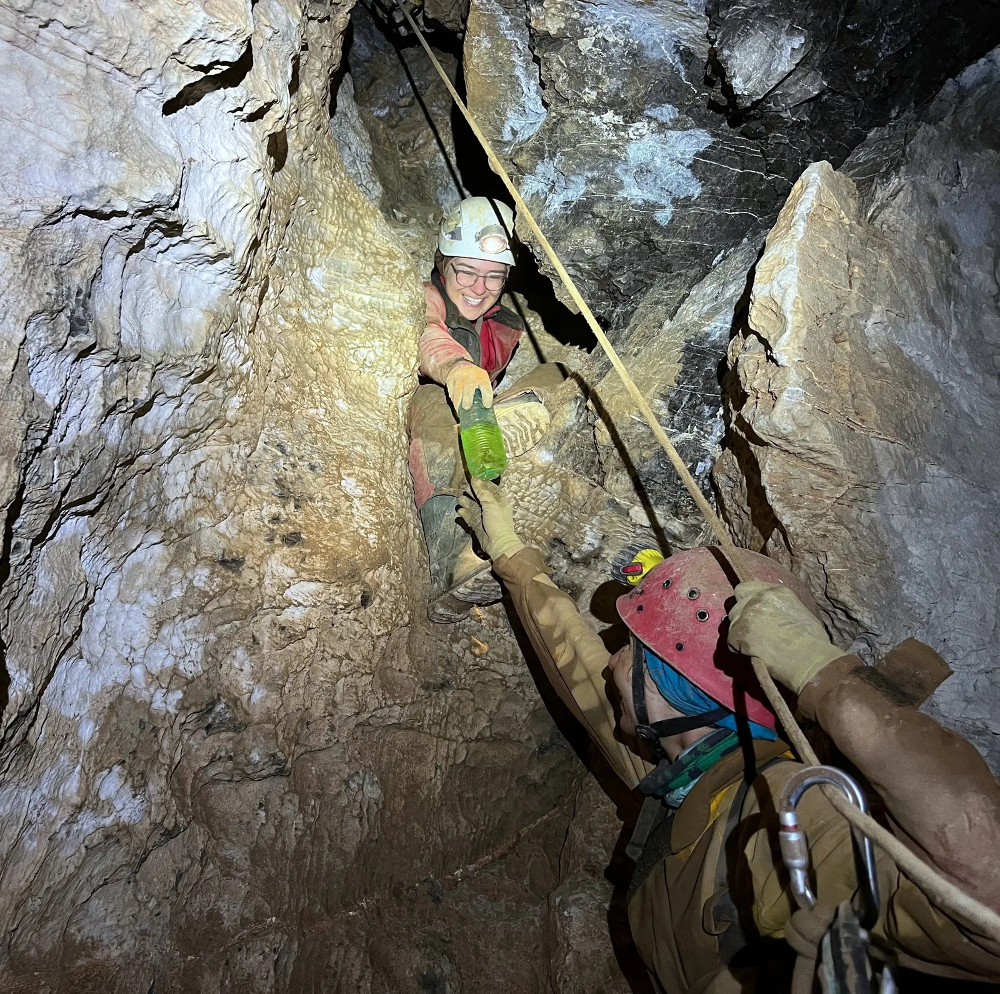

SPELEOLOŠKA EKSPEDICIJA "NEDAM 2022"
Poziv na speleološku ekspediciju na području Hajdučkih kukova - NP Sjeverni Velebit

U razdoblju od 30.7.–14.8.2022. održat će se speleološka ekspedicija na području Hajdučkih kukova unutar Nacionalnog Parka Sjeverni Velebit.
Tijekom ekspedicije u lipnju (15.–22.6.2022.) nastavkom istraživanja iza sifona, dosegnuto je dno jame Nedam, čime je postala druga najdublja jama u Hrvatskoj. Stoga će primarni cilj ljetne ekspedicije biti raspremanje jame Nedam od dna do 1. bivka na -300m, kao i nastavak istraživanja u drugoj grani gdje se stalo na dubini od -563m. Također, istraživat će se i okolno područje što podrazumijeva rekognosciranje terena, prikupljanje podataka koji nedostaju o već poznatim objektima te istraživanje u novopronađenim i otprije poznatim objektima.
Glavni kamp bit će na Velikom Lomu uz makadamsku cestu, s pristupom tehničkoj vodi iz bunara.
Kotizacija iznosi 50 kn za jedan dan, odnosno 450 kn za boravak u trajanju cijele ekspedicije.
U kotizaciju su uključeni doručak, užina na terenu, kuhana večera i hrana potrebna za boravak u jami.
Prijave do 15.7.2022.
OVDJE ISPUNITE PRIJAVNICU ZA EKSPEDICIJU:
https://forms.gle/SEwEZMqyfceuV3Fd8
Za sva pitanja i nedoumice slobodno se obratite voditeljici ekspedicije:
Gorana Perić
+385 91 89 66 034
arhivasov@gmail.com
Fuel exchange_photo by Efrosina Hristova